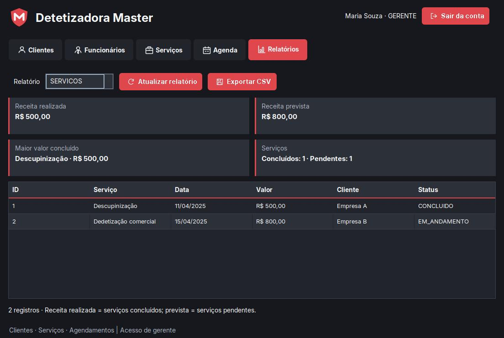
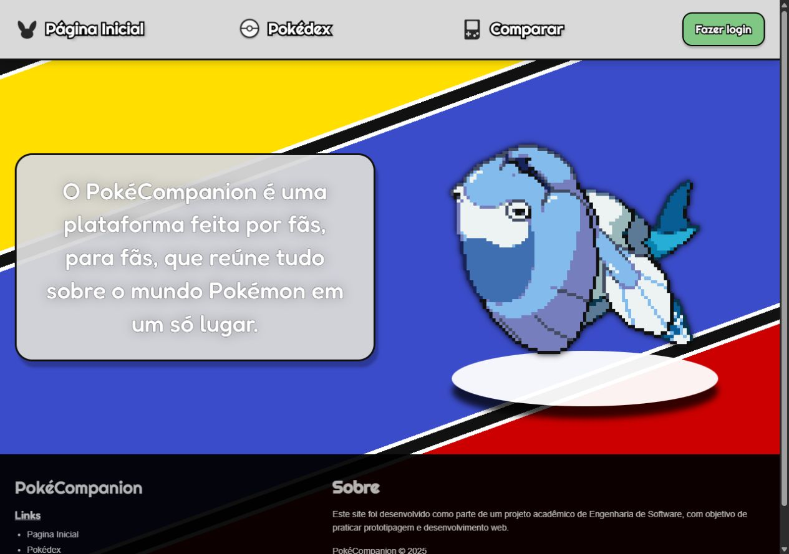
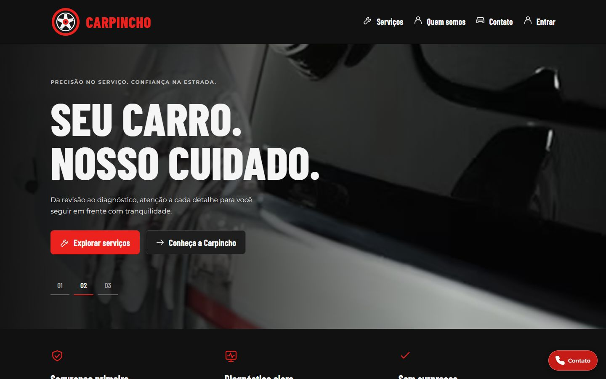
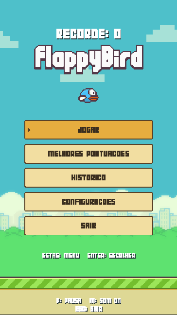
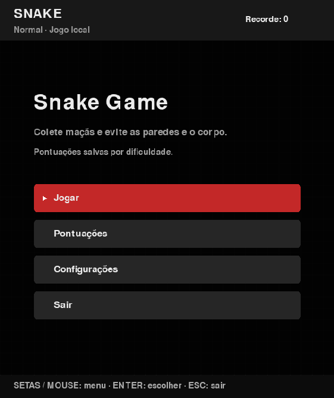
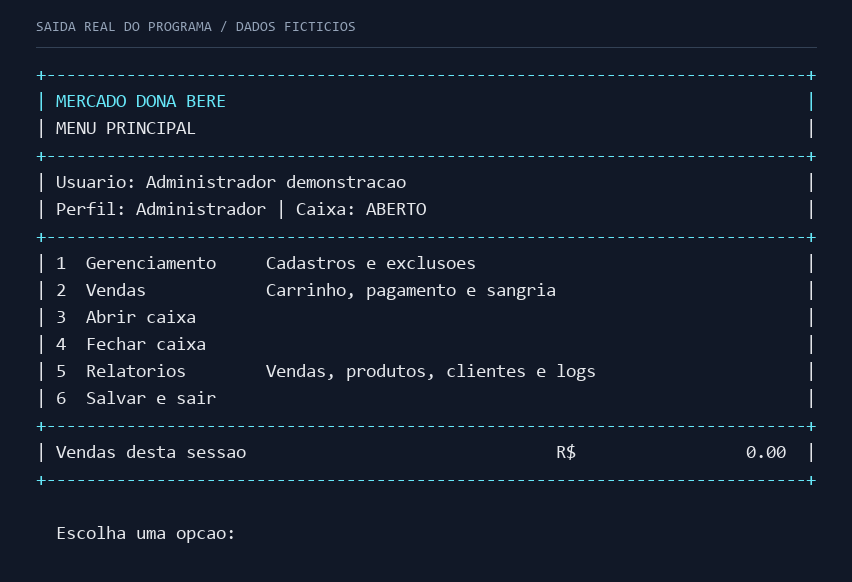

01Detetizadora Master
Clientes, serviços, agendamentos e relatórios em um sistema de gestão com banco de dados.
Olá, eu sou
Desenvolvimento Full Stack
Estudante de Engenharia de Software e ADS.
Projetos web, aplicações desktop e jogos.
01 / Sobre
Foz do Iguaçu, Paraná
Meu foco é o desenvolvimento de software, com prática em projetos acadêmicos e pessoais.
Curso Engenharia de Software e Análise e Desenvolvimento de Sistemas na UniAmérica. Nos projetos acadêmicos e pessoais, pratico criação de APIs, persistência de dados, construção de interfaces e testes automatizados.
Minha experiência profissional passa por compras, controle e controladoria. Essa vivência faz parte do meu interesse em entender processos e desenvolver sistemas que ajudem a organizar o trabalho.
Busco uma oportunidade de estágio ou como desenvolvedor júnior para aprender com uma equipe e contribuir com os conhecimentos que venho desenvolvendo.
Minha trajetória no LinkedIn02 / Na prática
O que venho construindo
e aprendendo pelo caminho.

01Clientes, serviços, agendamentos e relatórios em um sistema de gestão com banco de dados.

02Consulta de Pokémon, filtros, comparação e favoritos em uma interface responsiva.
Gestão contábil com empresas, contas e movimentações. Integração entre back e front em andamento.

04Oficina fictícia com catálogo de serviços, mapa e uma demonstração de gestão local.

05Dificuldade progressiva, histórico de partidas e instalador para Windows.

06Modos de dificuldade, recordes por modalidade e configurações persistentes.

07Cadastros, estoque, vendas e caixa. Um projeto para praticar listas encadeadas, memória e persistência em arquivos.
03 / Conhecimentos
Conhecimentos aplicados nos projetos e em estudo contínuo.
04 / Trajetória
Aprendizado acadêmico e
vivência profissional.
UniAmérica
Engenharia de Software e Análise e Desenvolvimento de Sistemas.
Alura
UniAmérica
Rafain Palace Hotel & Convention
Atuação profissional na área administrativa e de controladoria.
Grupo Capitão
Experiência nas áreas de compras e controle.
05 / Contato
Estou buscando estágio ou uma oportunidade júnior em desenvolvimento de software.
Enviar e-mail